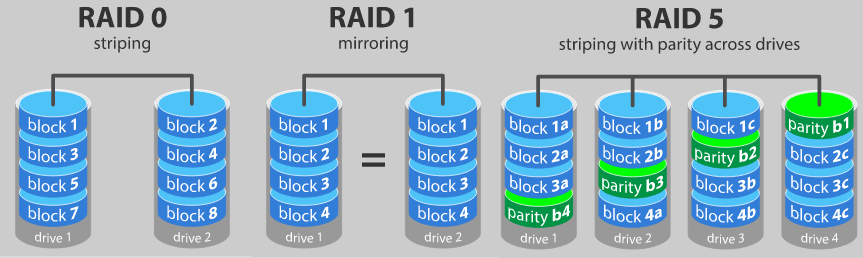

Le RAID est un ensemble de techniques de
virtualisation du stockage permettant de répartir
des données sur plusieurs disques durs afin
d'améliorer soit les performances, soit la
sécurité ou la tolérance aux pannes de l'ensemble
du ou des systèmes.
Voir une vidéo d'explication

L'architecture RAID s'oppose
donc à l'architecture SLED (Single Large Expensive Disk),
qui est fondée sur l'utilisation d'un seul et même disque
dur de grande capacité et de haute performance, donc de
prix élevé, car celui-ci doit non seulement pouvoir
stocker beaucoup d'informations, mais il doit de plus
être d'excellente qualité pour garantir au mieux la
pérennité et l'accessibilité de son contenu non redondant.
En savoir plus